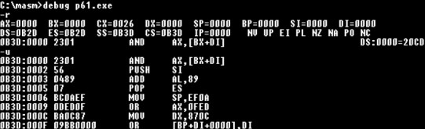
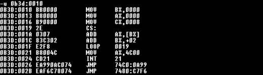
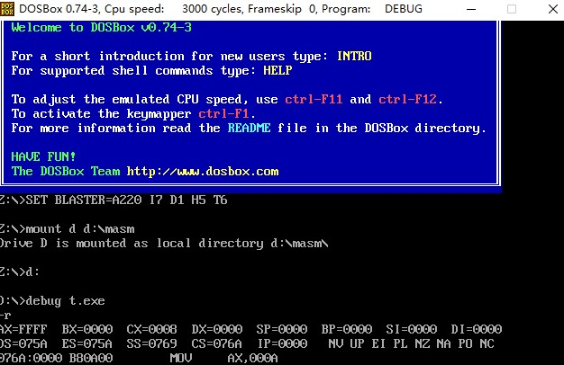

从0开始的汇编语言（六）
前言
从0开始的汇编语言系列，选用的参考书籍是清华大学出版社，王爽老师的《汇编语言第四版》。该系列属于博主的笔记系列，文中会采用一些书中的例子，图片以及思考题供读者阅读，如需详细学习汇编语言可以购入一本，谢谢。
学习之前我们做如下约定（随着学习深入还会出现新的约定）：
- 十六进制数均以H结尾
- 使用8086CPU作为案例
- 我们使用(地址或寄存器名称)表示一个寄存器或一个内存单元的内容，()内地址是且一定是物理地址
- 我们将idata视作常量
话不多说我们马上开始。
包含多个段的程序
在学习这一章之前，我们也写了不少程序了，但这些程序都是只使用了一个段的，就好像一个程序只有Main函数。这种写程序的手法是很低端的，一点都不符合我们高端程序员的身份，更何况万一我的程序需要其他地方放数据怎么办？在上一篇中，我们讲到了要使用一段安全的空间，但是那段空间只有256个字节大小，万一我们需要的空间大于256个字节怎么办？其实在操作系统的管控下，程序可以取得任意容量的内存，操作系统会为我们安排好。
程序获取空间的手段有两种，一种是在加载程序时为程序分配好，另一种是在程序执行的过程中向系统申请。第二种就是我们在高级语言中使用的malloc或者new函数等等，这里不多讨论。我们之前在源程序中定义段来进行内存空间的获取，这就是我们为了程序加载过程中得到所需空间做的准备。
大多数有用的程序，都要处理数据，使用栈等等操作，为了设计上看起来清晰，我们也会定义很多段来做不同的事情，就像是我们会写很多函数而不是把代码全都堆放在Main中。我们慢慢的去体验由一个段的程序到多个段的程序这个过程。
在代码段中使用数据
试想这样一个问题，现在我们有这样8个数据，分别是0123H,0456H,0789H,0abcH,0fedH,0cbaH,0987H。我们要做这样一件事情将他们累加起来放在AX中。之前我们也做过类似的事情，只不过那个时候我们还没有要求将特定的数据累加起来。自从学会loop指令后，总是想用一下看看，没错这次的问题是使用loop指令来完成，但这就代表着我们在累加前，要想办法把这8个数据存放在一组地址连续的内存单元中，就像是我们在高级语言中会做的那样，把他们放在数组中。但问题是我们要上那找到再这样一组内存单元呢？我们不能自己随便找一段内存单元就把它们丢进去了，这样太不负责任了，我们应该告诉系统我们需要一个地方来放这些数据，由系统分配给我们。那具体我们要怎么做呢？来看看代码叭：
1 | assume cs:code |
首先，解释一下什么是“dw”，dw即“define word”翻译过来就是定义字型数据，在这里dw定义了8个字型数据，大小16个字节，那么这些数据存在哪里了呢？数据既然是跟着代码一起被加载到内存中的，那肯定是在代码段中啦，因为dw定义数据的位置在整个代码段的最上面，所以这8个数据的偏移地址就是0,2,4,6,8,A,C,E。所以在循环中bx每次加2来累加这8个字型数据。
在编写完成程序以后我们编译、连接，等等先别急，我们用debug追踪一下看看，debug使用U指令！

啊！什么？这是什么？！这不是我的代码啊！哎别急别急，你仔细看看这些汇编指令对应的机械码，是不是看起来很眼熟，没错这16个字节对应的就是程序所定义的字型数据，它们也是程序的一部分。我们跳过这个部分，从0B3D:0010后面看。

所以我们想要正确的运行程序就要手动的使用r指令将寄存器IP改为10H。但我们的程序要怎么直接运行呢？总不能让所有人都会使用debug，都手动更改IP吧！当然不需要这样我们只需要对源程序进行小小的改动就可以解决这个问题：
1 | assume cs:code |
注意啦！我们在程序的第一条指令前面加了一个标号，并且在伪指令end后面也加上了同名标号。这里我们就要再一次的讨论end的作用啦，end除了可通知编译器程序到此结束外，还可以通知编译器程序到底从哪里进入。正如修改后的代码所做，伪指令end告诉编译器这个程序要从start后面开始，”mov bx,0“才是第一条指令。
我们之前说过，一个程序运行首先由一个其他程序装载到内存中将CPU的控制权递交给程序，根据第一条指令的段地址和偏移地址来设置寄存器CS和寄存器IP，最后程序运行完将CPU的控制权归还。可问题是，怎么才能知道那一条才是程序的第一条指令呢？我们知道一个可执行文件由描述信息和程序组成，程序就是我们写的代码，描述信息就是处理伪指令后得到的信息，我们在上面在这个程序中使用end告知编译器程序的起始位置与程序的结束位置，在编译后end start就变成了入口地址，储存在描述信息中，所以可以知道程序第一条指令的位置。所以我们若要CPU从何处开始执行程序，只要使用”end 标号“指明就好。
在代码段中使用栈
我们再来思考这样的问题还是上述8个数据：0123H,0456H,0789H,0abcH,0fedH,0cbaH,0987H。现在我们希望将它们逆序存放，我们要怎么做呢？我们来慢慢想，想要逆序一组数据，使用栈是一个非常好的选择，只需要将所有数据入栈，再出栈就可以实现逆序了，那么我们就需要一段可以用来当做栈的内存空间，同样我们不可以自己取用，要通过程序来得到这个空间。来看看代码叭：
1 | assume cs:codesg |
注意啦我们定义了16个字型数据，并将它们所占用的32个字节大小的空间作为栈使用，也就是说我们打算使用CS:10~CS:2F这段内存空间作为栈使用，初始情况下栈为空SS:SP要指向栈底，所以我们设置寄存器SP内容为30H。这样我们就的到了32个字节大小的栈。我们描述dw的作用时，可以说它定义了数据，同时也可以说它开辟了空间，看程序员具体希望得到的东西到底是空间还是数据。
将数据、代码、栈放入不同的段
我们已经知道怎么把数据、代码、栈放入一个段中啦！但这样做会有两个问题，一是这样写整个程序会很乱，二是一个段的大小不可以超过64KB（这是8086模式的限制，不是所有处理器都这样）。所以我们应该考虑怎么把这些东西放到不同的段里面。其实很简单我们只需要定义多个段然后放进去不就好了嘛（额好废的废话。。），我们量来看具体代码叭：
1 | assume cs:code,ds:data,ss:stack |
怎么样是不是真的很简单！下面我们对程序仔细的说明一下：
定义多个段的方法
很简单，我们从程序中就可以看出，定义一个段的方法和前面所讲的定义代码段的方法一样，只不过不同的段，我们要命不同的名。
对段地址与偏移地址的取用
现在程序里面有多个段了，我们访问数据就需要知道这些数据的地址，可是我们如何知道这些数据的地址呢？首先，在程序中段名就相当于一个标号，它就代表了段地址，比如data就代表了数据段的段地址，stack就代表了栈段的段地址。其次偏移地址，这些数据在自己的段中偏移地址都是从0开始的，就类似一个数组，数组名代表数组的起始位置，其中的数据的偏移地址就是自己的标号（当然数组的偏移地址不会是简单的0,1,2·····还要根据数组类型计算）。
一些思考
首先，思考这样一个问题，我们定义一个段，如果段中的数据占N个字节，则程序加载后该段占用的实际空间为多少？我们一点点思考，一个段内可以根据段地址被分为一个个小段，这些小段每个大小为16字节。哪怕一个小段里面只存储了1字节大小的数据，其余都是空的那么也需要一整个小段。所以确定一个段到底占用多大空间，我们要先确定有多少个小段 ，这个很简单就是N/16+1，这里N/16的意思是向下取整的意思，先确定有多少个装满了的小段，加上1就是所用的全部小段，确定有多少个小段之后再乘16就是占用的空间大小了。所以答案是（N/16+1）×16。
想明白这个问题，我们另一个问题，现有如下程序：
1 | assume cs:code,ds:data,ss:stack |
假设code段的段地址为X，那么data段的段地址为多少？stack段的段地址为多少？
其实博主看到这个问题时候也是一头雾水，这可怎么办？我也不知道code段占用多大的空间啊，那我怎么知道要加多少才可以。后来博主在网上找到了答案，当你使用debug跟踪一个程序时，寄存器CX最开始会存储整个源程序无论是代码段还是栈段或者其他段的整体大小（这里博主试验了一下，使用d指令查看程序占用大小为8，寄存器CX中也确实存储了0008H）。

所以当我们使用debug跟踪问题提供的程序以后，可以看到(CX)=0044H，也就是68个字节，我们可以把这68个字节看成一个大段它使用了5个小段来存储内容，其中stack和data使用了1个段（这是根据stack和data中数据占用大小计算的出的，和上一个问题相同），这样代码段就使用了3个段，根据程序从上到下的顺序可以知道代码段的段地址加上3就是data段的段地址，加上4就是stack段的段地址，所以答案是data段的段地址为X+3，stack段的段地址为X+4。
总结
学习到这里，我们已经掌握了很多汇编知识了，所以在这里写一个总结（其实是有个事情我不知道写在哪里好随便插在总结里叭），汇编语言的学习是为了让我们深刻的理解计算机硬件，对于计算机的运作有深刻的认知，但要记住汇编语言也是人类创造出来方便人类的语言，它并不是计算机的母语，汇编语言最后还是会转变为二进制代码，变成高电平，低电平来工作的，所以我们写下的代码不代表CPU会根据我们的认知来运作，不是说我们定义一个栈CPU就会承认它是个段，SS:SP才决定了哪里是栈段，其余的也是如此。最后，汇编语言的旅程才刚刚开始，加油叭！少年！
 wechat
wechat alipay
alipay